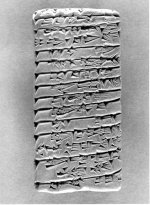

Lijst met namen van arbeiders. Ur III periode. Kleitablet, 90 x 44 x 20 mm. Lagash, Zuid-Mesopotamië, circa 2100 v.Chr. -- (Rijksmuseum van Oudheden, A 1899/3.6)
 Vanaf het begin van de Mesopotamische historie, rond 3300 v.Chr., was het kleitablet de tekstdrager bij uitstek in het Nabije Oosten. Klei was ruim voorradig en kon gemakkelijk in de hand gevormd worden. Spijkerschrifttekens werden compact en loepzuiver in het nog weke materiaal ingedrukt. Eenmaal gebakken was het kleitablet duurzaam genoeg om van hand tot hand te gaan of in een archief opgeborgen te worden.
Allerlei teksten werden erop vastgelegd, ook de gewone, dagelijkse administratie. Daarvan getuigt dit tablet. De tekst bevat de namen van arbeiders ‘met de hak’ (een landbouwwerktuig) aan wie in ruil voor landarbeid een broodrantsoen is uitgedeeld. Het tablet is afkomstig uit de agrarische administratie van een tempel te Lagash (tegenwoordig el-Hibeh geheten).
| vorige pagina | top pagina |